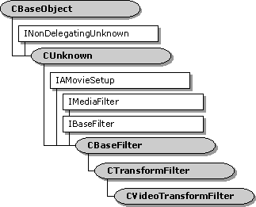

description: The CVideoTransformFilter class is designed primarily as a base class for AVI decompressor filters. ms.assetid: 8eb87f9f-24b3-4dbe-a390-54db993d2724 title: CVideoTransformFilter class ms.topic: reference ms.date: 4/26/2023 topic_type:
[The feature associated with this page, DirectShow, is a legacy feature. It has been superseded by MediaPlayer, IMFMediaEngine, and Audio/Video Capture in Media Foundation. Those features have been optimized for Windows 10 and Windows 11. Microsoft strongly recommends that new code use MediaPlayer, IMFMediaEngine and Audio/Video Capture in Media Foundation instead of DirectShow, when possible. Microsoft suggests that existing code that uses the legacy APIs be rewritten to use the new APIs if possible.]

The CVideoTransformFilter class is designed primarily as a base class for AVI decompressor filters. This class adds support for quality control to the CTransformFilter class. The filter's Receive method can decide to drop frames, based on quality messages from the renderer and performance measurements that the filter collects while it is streaming.
If the filter drops a frame, it continues to drop frames until it reaches the next key frame. For MPEG streams, the filter does not distinguish between B frames and P frames.
| Protected Member Variables | Description |
|---|---|
| m_bQualityChanged | Indicates whether the filter has dropped frames. |
| m_bSkipping | Indicates whether the filter is currently dropping frames. |
| m_itrAvgDecode | Average length of time it has taken to decode a frame. |
| m_itrLate | Indicates how late the samples are arriving at the renderer. |
| m_nFramesSinceKeyFrame | The number of frames that the filter has received since the last key frame. |
| m_nKeyFramePeriod | The largest observed interval between key frames. |
| m_nWaitForKey | The current maximum number of delta frames to drop. |
| m_tDecodeStart | Length of time that it took to decode the most recent sample. |
| Protected Methods | Description |
| AbortPlayback | Used to signal a streaming error. |
| AlterQuality | Notifies the filter that a quality change is requested. |
| Receive | Receives a media sample, processes it, and delivers an output sample to the downstream filter. |
| ShouldSkipFrame | Determines whether the filter should drop a specified sample. |
| StartStreaming | Called when the filter switches to the paused state. |
| Public Methods | Description |
| CVideoTransformFilter | Constructor method. |
| EndFlush | Ends a flush operation. |
Â
Â
Â